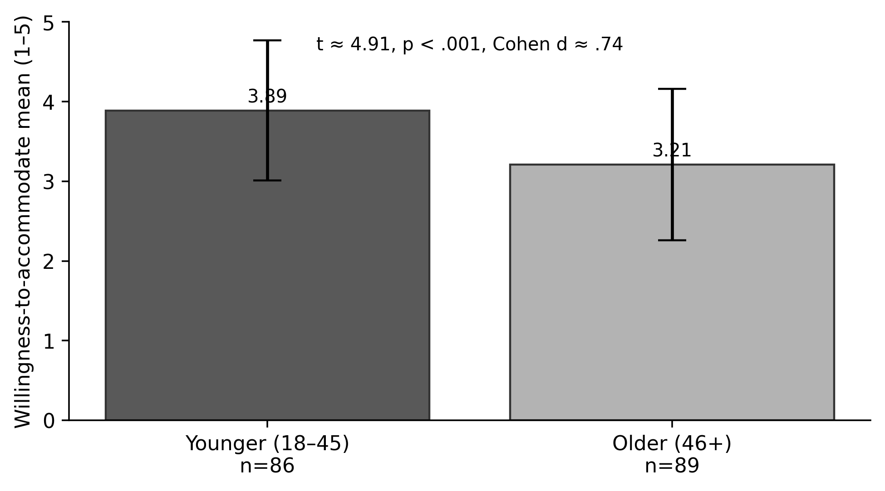
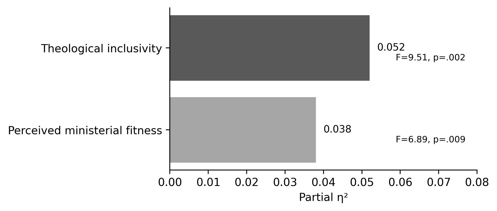

PIONEER PUBLICATION · ACCEPTED ARTICLE · ORIGINAL RESEARCH ARTICLE · SETEHEM: HUMANITIES & SOCIAL SCIENCES × EDUCATION × RELIGIOUS STUDIES
Who Is Considered Fit for Ministry? Age, Region and Disability-Inclusion Attitudes among Anglican Clergy, Faculty and Administrators in Nigeria
UKULE, Peter¹* · NNAJI, Charles Ogundu¹ · KEHINDE, Adeola¹
¹Department of Christian Studies and Religious Communication, University of Abuja, Abuja, Nigeria
Corresponding author: rev.ukulepeter@gmail.com
Article | Volume/Issue | Published | ISSN | DOI |
|---|---|---|---|---|
e014 | 1(1) | August 2026 | Pending assignment | Pending registration |
DOI: Pending registration. This local production copy is not a public version of record until DOI registration and journal-release checks are complete.
Abstract
Background: Institutional access is shaped not only by buildings and policy but by the judgments of gatekeepers who interpret ministerial fitness, approve accommodations and influence placement.Objective: This paper examined generational and regional differences in disability-inclusion attitudes among Anglican clergy, seminary faculty and administrators.Methods: The analysis uses the post-defence corrected quantitative results of the Inclusion Attitudes in Theological Education Survey. A total of 175 usable questionnaires were returned from 198 distributed (88.4%). The respondent group was predominantly male (90.9%) and experienced, with 85.7% reporting more than six years of service. Corrected direction-consistent scoring was applied to exclusionary items. Age-group willingness to accommodate and regional differences in theological inclusivity and perceived ministerial fitness were examined using the verified t-test, ANOVA and effect-size results.Results: Younger respondents aged 18–45 (n=86) reported greater willingness to accommodate (M=3.89, SD=.88) than respondents aged 46+ (n=89; M=3.21, SD=.95), t≈4.91, p<.001, d≈.74. Regional comparison showed significant differences for theological inclusivity, F=9.51, p=.002, partial η²≈.052, and perceived ministerial fitness, F=6.89, p=.009, partial η²≈.038. The age effect was substantively larger than the regional effects.Conclusion: The findings identify a generational leadership challenge rather than an immutable Anglican position on disability. Reform should therefore include continuing formation for senior leaders, explicit ministerial-fitness criteria and structured exposure to disability theology and lived experience rather than relying on gradual generational replacement.
Keywords: ministerial fitness; disability attitudes; Anglican clergy; generational differences; theological education; accommodation; Nigeria
1. Introduction
Gatekeeping is one of the least visible forms of disability exclusion. Buildings can be audited and policies can be read, but judgments about who “looks” capable of ministry are often embedded in everyday discernment, admissions interviews, formation reports and placement conversations. Those judgments matter because theological institutions operate through professional and ecclesiastical discretion.
The distinction between impairment and institutional disability is therefore incomplete unless it includes the social meaning attached to bodies. A candidate may meet the intellectual, spiritual and pastoral requirements of formation yet still be considered unsuitable because leadership is imagined through mobility, speech, vision, hearing or physical stamina. Disability theology challenges that substitution of bodily norm for vocation, while social-psychological research on diversity suggests that education, contact and institutional climate can change attitudes over time (Trolian & Parker, 2022).
This article isolates two contextual factors—age and region—to examine whether attitudes were distributed evenly across the respondent group. The purpose is not to essentialise generations or regions, but to identify where formation and policy interventions may need to be concentrated.
2. Materials and Methods
2.1 Survey sample
The parent study distributed 198 IATES questionnaires to seminary faculty, administrators and clergy; 175 were returned, an 88.4% response rate. Faculty constituted 38.9% of respondents, administrators 17.1% and clergy 44.0%. Men comprised 90.9% of the sample. The age distribution was 12.0% aged 18–30, 37.1% aged 31–45, 40.6% aged 46–60 and 10.3% aged 60+. In service experience, 85.7% reported more than six years. The sample therefore captured a substantial group of established institutional actors rather than students alone.
Table 1. Selected respondent profile (N=175).
Characteristic | Category | n | % |
|---|---|---|---|
Primary role | Seminary faculty | 68 | 38.9 |
Primary role | Administrator | 30 | 17.1 |
Primary role | Clergy | 77 | 44.0 |
Gender | Male | 159 | 90.9 |
Gender | Female | 16 | 9.1 |
Age | 18–45 | 86 | 49.1 |
Age | 46+ | 89 | 50.9 |
Service | More than 6 years | 150 | 85.7 |
2.2 Measures and corrections
The final IATES blueprint contained theological-understanding, perceived-ministerial-fitness and willingness-to-accommodate items. Post-defence harmonisation corrected the interpretation of negatively phrased items through reverse scoring. The earlier 19-item pilot coefficients are retained only as instrument-development evidence and are not presented as reliability coefficients for the final 25-item form.
2.3 Statistical comparisons
The verified age comparison contrasted respondents aged 18–45 with those aged 46+. Regional analysis compared the northern and southern respondent groupings reported in the accepted results. The post-defence note supplies corrected effect sizes: Cohen’s d≈.74 for age-group willingness to accommodate; partial η²≈.052 for regional theological inclusivity; and partial η²≈.038 for regional perceived ministerial fitness. Statistical significance was interpreted together with effect size rather than as a binary result.
3. Results
3.1 Generational difference in willingness to accommodate
Younger respondents reported a mean willingness-to-accommodate score of 3.89 (SD=.88; n=86), compared with 3.21 (SD=.95; n=89) among respondents aged 46+. The corrected test statistic was t≈4.91 with p<.001 and Cohen’s d≈.74. On conventional effect-size interpretation, the difference is moderate-to-large and therefore not adequately described as a merely statistical difference.

Figure 1. Willingness to accommodate by age group. Error bars show reported standard deviations, not confidence intervals. Source: post-defence statistical verification note.
Table 2. Verified age-group comparison.
Group | n | Mean | SD | Test | Effect size |
|---|---|---|---|---|---|
18–45 | 86 | 3.89 | .88 | t≈4.91, p<.001 | d≈.74 |
46+ | 89 | 3.21 | .95 | — | — |
3.2 Regional differences
Regional comparison was also statistically significant. Theological inclusivity differed by region at F=9.51, p=.002, with partial η²≈.052. Perceived ministerial fitness differed at F=6.89, p=.009, with partial η²≈.038. The thesis reports that southern respondents were somewhat more inclusive. The effect-size magnitudes are small-to-moderate, and smaller than the age-group effect.

Figure 2. Effect-size magnitude for regional differences in theological inclusivity and perceived ministerial fitness. Source: post-defence statistical verification note.
Table 3. Verified regional effects.
Outcome | F | p | Partial η² | Interpretation |
|---|---|---|---|---|
Theological inclusivity | 9.51 | .002 | .052 | Small-to-moderate contextual difference |
Perceived ministerial fitness | 6.89 | .009 | .038 | Small contextual difference |
4. Discussion
The age result is the most consequential finding in this focused analysis. It suggests that disability inclusion is not fixed by Anglican doctrine alone; attitudes vary meaningfully across cohorts occupying the same ecclesial tradition. That variation matters because older respondents are more likely to occupy senior roles with authority over admissions, formation assessment, ordination recommendation and institutional budgets. A generational effect can therefore become an institutional effect when authority is unequally distributed.
The finding should not be interpreted as a moral indictment of older clergy. Age is a proxy for multiple experiences that were not isolated by the aggregate analysis: theological curriculum exposure, disability contact, international Anglican discourse, digital media, changing human-rights norms and different models of leadership formation. The practical implication is educational. If attitudes can differ substantially within one tradition, they can also be addressed through structured formation rather than treated as inevitable.
The regional results are statistically clear but substantively smaller. This cautions against explaining disability exclusion primarily through geography or broad cultural stereotypes. Regional history and exposure matter, but the more pronounced generational difference points toward leadership formation and institutional socialisation as important sites of intervention.
4.1 Ministerial fitness as an essential-function question
One way to reduce attitudinal gatekeeping is to replace vague judgments of “fitness” with explicit essential-function analysis. The relevant question is not whether a candidate conforms to an inherited image of bodily normalcy, but what functions the ministry actually requires, what can be performed in different ways, and what reasonable accommodation makes faithful participation possible. This approach is compatible with both disability justice and Christian accounts of differentiated gifts.
4.2 Formation implications
Continuing ministerial education should therefore address disability theology, stereotypes about pastoral authority, practical accommodation and the testimonies of disabled clergy and students. The parent study’s implementation matrix appropriately assigns responsibility not only to students but to curriculum boards, faculty, bishops and seminary governance. Waiting for younger clergy to replace older leaders would leave current applicants exposed to avoidable exclusion for years.
5. Limitations
The age and region findings are based on aggregate group comparisons and do not establish why the groups differed. The survey sample was predominantly male, which limits inference about gendered patterns. The regional analysis used the north/south grouping reported in the accepted results rather than a fully balanced six-zone institutional design. Effect sizes are reported from the post-defence verification note; no new inferential analysis is introduced in this article.
6. Conclusion
Disability inclusion among the Anglican gatekeepers studied was not uniform. Younger respondents were substantially more willing to accommodate than older respondents, while regional differences were present but smaller. The result offers both warning and opportunity. Senior leadership attitudes can delay institutional reform, but the variation also shows that exclusion is not the only available Anglican response. Seminaries and dioceses can deliberately form leaders to distinguish vocation from bodily stereotype, evaluate essential ministry functions fairly and treat accommodation as part of ordinary ecclesial responsibility.
Declarations
Table. Publication declarations and research-integrity information.
Declaration | Statement |
|---|---|
Study provenance | Focused quantitative article derived from the post-defence harmonised Ph.D. thesis of Peter Ukule. |
Statistical integrity | Only the corrected post-defence t, p and effect-size values are used. No new respondent-level modelling is claimed. |
Data availability | Aggregate survey results are reported in the thesis; respondent-level records are subject to the confidentiality conditions of the parent study. |
Authorship | Peter Ukule led the doctoral research; Charles Ogundu Nnaji and Adeola Kehinde supervised the study and are co-authors of this focused article. |
References
Barton, S. J. (2021). Access and disability justice in theological education. Journal of Disability & Religion, 25(3), 279–295.
Braun, V., & Clarke, V. (2022). Thematic analysis: A practical guide. SAGE.
Carter, E. W., et al. (2023). Addressing accessibility within the church: Perspectives of people with disabilities. Journal of Religion and Health, 62(4), 2474–2495.
Creswell, J. W., & Creswell, J. D. (2022). Research design: Qualitative, quantitative, and mixed methods approaches (6th ed.). SAGE.
Degener, T. (2016). Disability in a human rights context. Laws, 5(3), 1–24.
Eiesland, N. (1994). The disabled God: Toward a liberatory theology of disability. Abingdon Press.
Hauerwas, S. (2004). Suffering presence: Theological reflections on medicine, the mentally handicapped, and the church. University of Notre Dame Press.
McMahon-Panther, G., & Bornman, J. (2025). Persons with disabilities in the Christian Church: A scoping review on the impact of expressions of compassion and justice on their inclusion and participation. Journal of Disability & Religion, 29(1), 81–108.
Swinton, J. (2012). From inclusion to belonging: A practical theology of community, disability and humanness. Journal of Religion, Disability & Health, 16(2), 172–190.
Tagwirei, K. (2024). Enabling abilities in disabilities: Developing differently abled Christian leadership in Africa. Theologia Viatorum, 48(1), 252.
World Council of Churches. (2003). A church of all and for all: An interim statement. WCC Publications.
Yong, A. (2011). The Bible, disability, and the church: A new vision of the people of God. Eerdmans.
Cohen, J. (1988). Statistical power analysis for the behavioral sciences (2nd ed.). Lawrence Erlbaum Associates.
Ferguson, C. J. (2021). An effect size primer: A guide for clinicians and researchers. Professional Psychology: Research and Practice, 52(1), 5–12.
Trolian, T. L., & Parker, E. T., III. (2022). Shaping students’ attitudes toward diversity: Do faculty practices and interactions with students matter? Research in Higher Education, 63(5), 849–870.
Publication Record
Article metadata.
Field | Record |
|---|---|
Article identifier | e014 |
Manuscript category | Original Research Article |
Parent study | Ukule, Peter. Ph.D. in Christian Theology, University of Abuja, February 2026; post-defence harmonised copy. |
Journal | CHIATECH JOURNAL SETEHEM, Volume 1, Issue 1 |
Publication month | August 2026 |